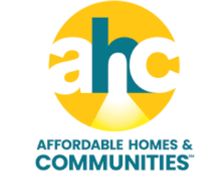
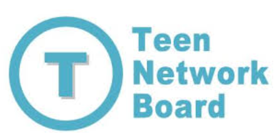
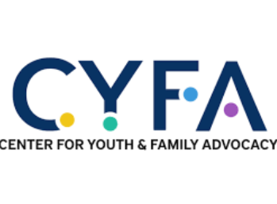

AHC – Teen Tutoring, CCR & Kids Programs
AHC provides academic and enrichment programs for children and teens, including tutoring
and college and career readiness support for high school students.
How they support YAS or students:
AHC supports students through tutoring, mentorship, and skill-building that promote academic
success and positive decision-making.
Visit AHC Website →

Teen Network Board (TNB)
The Teen Network Board (TNB) is a student-led group made up of high school students from
different communities. Members work through subcommittees focused on drug and alcohol
prevention, peer support, healthy relationships, and community engagement.
How they support YAS or students:
TNB brings students together to identify and remediate issues affecting high schoolers,
aligning with YAS's mission of peer-led prevention and advocacy.
Visit TNB Website →

Center for Youth and Family Advocacy (CYFA)
CYFA is a nonprofit organization focused on youth advocacy, leadership development, and
community engagement.
How they support YAS or students:
CYFA may support YAS by helping secure meeting spaces and connecting students to community
resources and advocacy opportunities.
Visit CYFA Website →